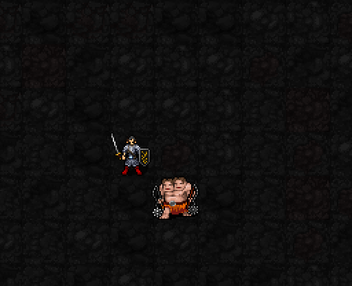

현재 실제 게임 초안

밝은 하늘색·연보라 음표가 머리 위에1개→2개→3개로 늘어납니다. 박자를 쓰거나 만료되면 사라집니다. 기존 별도 작은 장식은 제거했습니다.
실제 게임의 오른쪽 이동→왼쪽 이동→오른쪽 이동으로 박자1·2·3을 쌓은 다음, 아래쪽 적에게 실제 근접 공격을 시도해 전부 소모하는 장면입니다. 표시만 임의로 채운 영상이 아닙니다. 빗나가도 박자는 소모됩니다.
적 근처에서 이동해 박자를 모으고, 다음 근접 공격을 강화합니다.
해금: 신앙★30 · 최소 기도술 제한 없음
자동 패시브 · MP/신앙 소모 없음 · 별도 시전 버튼 없음

밝은 하늘색·연보라 음표가 머리 위에1개→2개→3개로 늘어납니다. 박자를 쓰거나 만료되면 사라집니다. 기존 별도 작은 장식은 제거했습니다.
실제 게임의 오른쪽 이동→왼쪽 이동→오른쪽 이동으로 박자1·2·3을 쌓은 다음, 아래쪽 적에게 실제 근접 공격을 시도해 전부 소모하는 장면입니다. 표시만 임의로 채운 영상이 아닙니다. 빗나가도 박자는 소모됩니다.
자발적으로 이동한 뒤 주변1칸에 유효한 적이 있고, 그 적이 이동 전 위치에서도2칸 이내이며 시야가 연결되면 박자+1. 한 번 이동에 최대1개, 총3개까지 쌓입니다.
제자리 대기나 강제 이동은 적립되지 않습니다. 혼란·행동 불가 상태에서도 적립되지 않습니다. 마지막 적립에서3턴이 지나면 박자가 사라집니다.
피해 보너스: 박자 수 × (3+⌊I/6⌋)
명중 보너스: 박자 수
I는 기도술, ⌊ ⌋는 소수점 버림.
| 기도술12 | 피해 보너스 | 명중 보너스 |
|---|---|---|
| 1박자 | +5 | +1 |
| 2박자 | +10 | +2 |
| 3박자 | +15 | +3 |
박자는 근접 공격을 시도할 때 전부 소모합니다. 빗나가도 소모하며, 최종 피해는 실제 공격 계산과 적의 방어에 따라 달라집니다. 원거리·주문 공격에는 이1성 보너스를 주지 않습니다.
라덴 1·3·5성 확정 완료. 현재 하지메 1성 검토 중이며 박자 표식의 가시성·개수 표시를 개선했습니다. 전투 수치는 유지합니다.